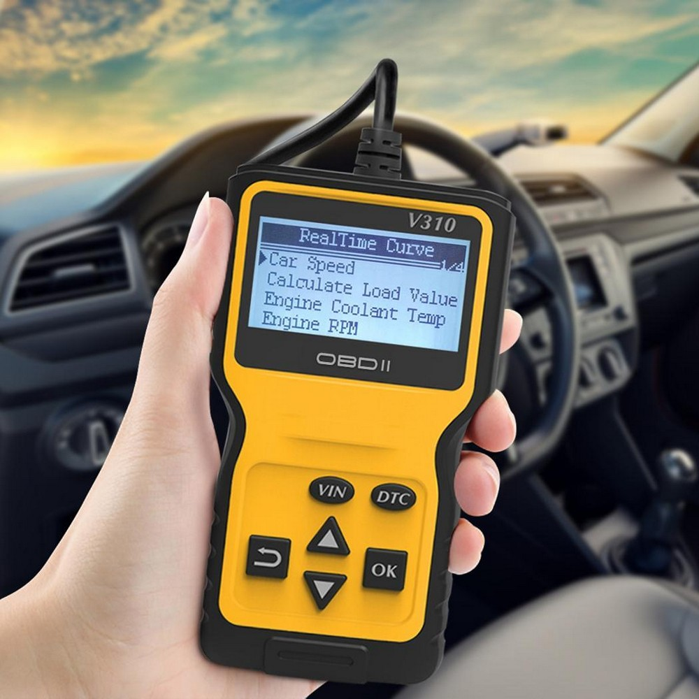
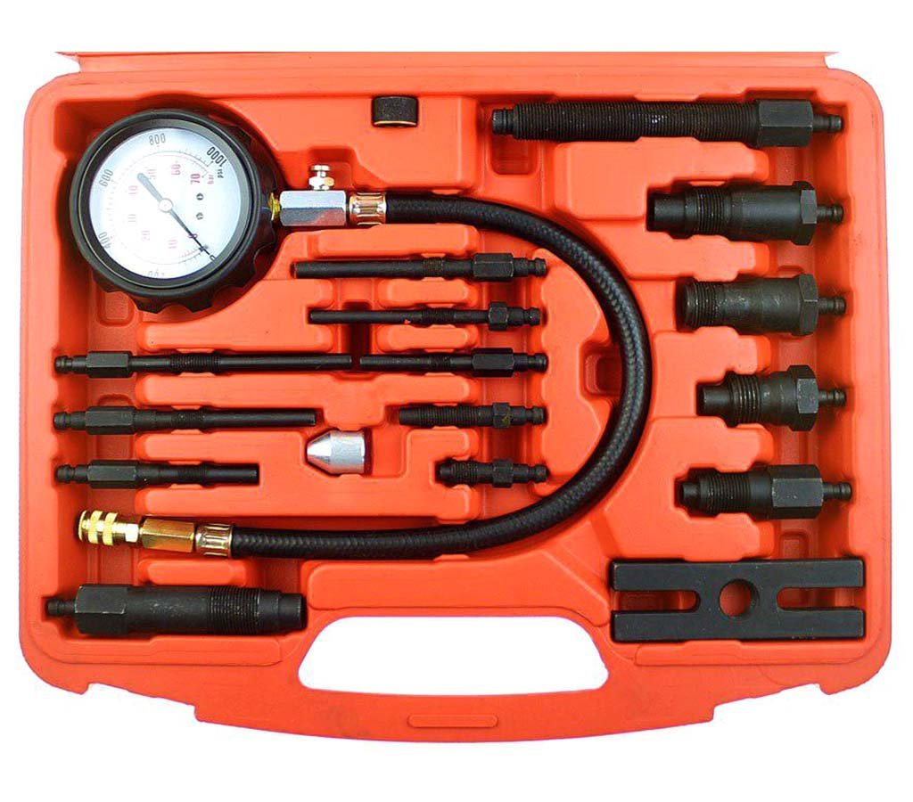
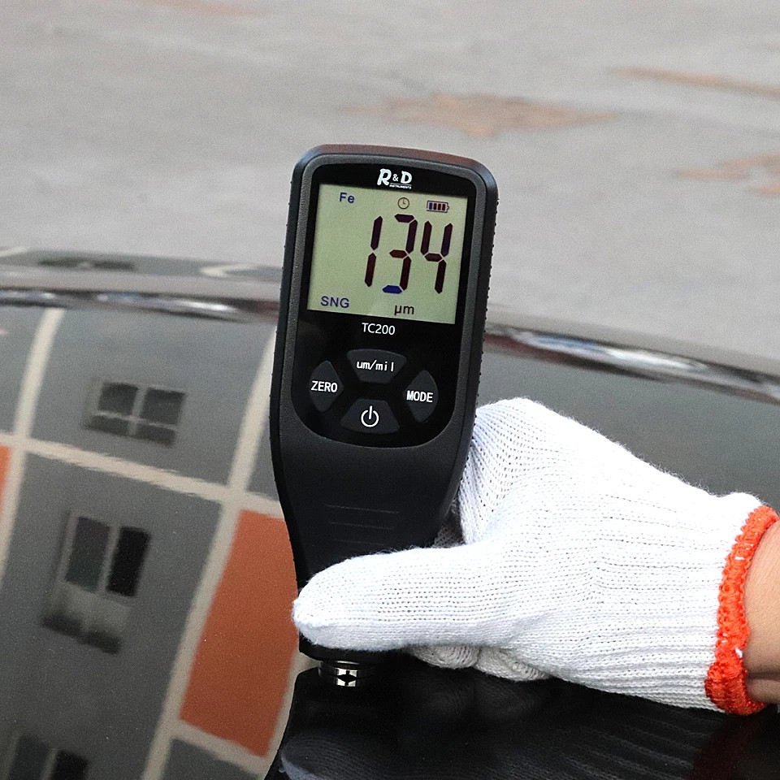

Приборы и методы для диагностики
Сканер для компьютерной диагностики
Инструмент считывает ошибки с бортового компьютера автомобиля. Большинство сканеров не предназначены для использования непрофессионалами, и дело не только в цене: сканер нужно правильно подключить и суметь считать данные с него.
Чтобы начать с ним работать, вам нужно будет скачать специальную программу. Если для оригинального сканера она стоит около 30 долларов на одну марку, то в случае с китайской репликой вы можете не потратить ни копейки. Устройство покажет ошибки, обороты двигателя, его нагрузку, температуру охлаждающей жидкости, состояние топливной системы, давление и расход топлива и т. д.
Прибор подключается к бортовому компьютеру автомобиля. Последний может быть спрятан возле рулевой колонки, в ногах пассажира или под приборной панелью — всё зависит от марки и модели авто.
Для более глубокой проверки обратитесь в сервисный центр или к автоэкспертам с профессиональным оборудованием.
Компрессометр
Компрессометр нужен для замера компрессии. Однако и тут автоэксперты отговаривают от покупки:
Чтобы замерить компрессию, нужно выкрутить свечи в двигателе. А сделать это на некоторых автомобилях не так просто. Если компрессии не будет в каком-то цилиндре, двигатель будет плохо работать
Толщиномер
измерительный прибор, позволяющий с высокой точностью измерить толщину материала или слоя покрытия материала (такого как краска, лак, грунт, шпаклёвка, ржавчина, толщину основной стенки металла, пластмасс, стекла, а также других неметаллических соединений, покрывающих металл).